Instilling civil responsibility, humanitarian service, and grassroots leadership across Tenkasi District.
The NSS unit organizes mandatory 7-day annual residential village development camps in adopted hamlets, blood grouping and donation camps, Swachh Bharat clean campus initiatives, and road safety awareness drives.
Dedicated to emergency medical readiness, first-aid techniques certified by the Indian Red Cross Society, disaster mitigation training, fire safety drills, and promoting health education among rural students.
Fostering environmental conservation, nutrition, entrepreneurship, and career grooming.
Manages green campus landscaping, rainwater harvesting awareness, energy saving protocols, botanical conservation, and plastic-free campus zones.
Educates students about nutritious traditional millets, balanced diet, culinary hygiene standards, and preventive health practices.
Incubates innovative student ventures, organises industrial visits, business idea challenges, and mentorship in partnership with MSME bodies.
Conducts campus interview training, aptitude tests, corporate communication bootcamps, resume workshops, and industry placement linkages.
Physical wellness and athletic discipline are core pillars of student formation at St. Joseph College. Under the leadership of Physical Director Mr. R. Siva Raja, the sports department regularly fields teams in university inter-collegiate zonal championships.
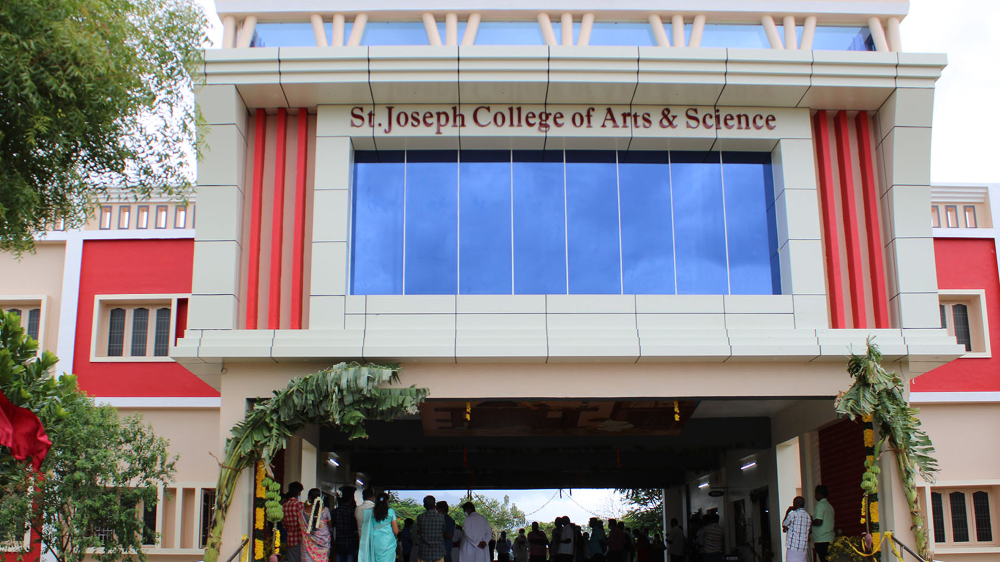
Celebrating the extraordinary academic, athletic, and co-curricular milestones achieved by our students at University, State, and District arenas.
Secured Manonmaniam Sundaranar University 1st Rank with 9.42 CGPA among all affiliated colleges across Tenkasi and Tirunelveli districts.
Awarded University 3rd Rank in MSU CBCS degree examinations with exemplary distinction in Pure Algebra and Complex Analysis.
Emerged champions undefeated throughout the MSU Inter-Collegiate Zonal Volleyball Tournament, defeating 16 competing collegiate squads.
Won the overall Winner Trophy and cash prize for developing an AI-driven smart agro-advisory web portal in the 24-hour hackathon.
Bagged silver trophy and individual medals in the Tenkasi District Inter-Collegiate Kabaddi Championship tournament.
Awarded Best Research Paper for presentation on "ESG Regulatory Compliance under SEBI Guidelines" at National Commerce Conclave.
Showcasing the creative literature, research essays, Tamil poetry, and artistic brilliance of our students and faculty fraternity.
Features patron messages from Rev. Fr. Selvaraj, Principal's annual milestone report, university rank chronicles, original student poetry, and photo retrospect.
Highlights department symposiums, NSS village camps, sports trophies, guest lectures, and placement drive highlights of the semester.
Press releases, news coverage in leading regional dailies, and institutional media options for press correspondents and community members.
வைகாலிபட்டி புனித வளனார் கலை மற்றும் அறிவியல் கல்லூரியில் நடைபெற்ற பட்டமளிப்பு விழாவில் மனோன்மணீயம் சுந்தரனார் பல்கலைக்கழக அளவில் தரவரிசை பெற்ற மாணவ, மாணவிகளுக்கு தங்கப் பதக்கங்களும் பட்டங்களும் வழங்கப்பட்டன.
செயலாளர் அருட்பணி. செல்வராஜ் மற்றும் முதல்வர் முனைவர் ஆர். குளோரி தேவா ஞானம் வழிகாட்டுதலில் நடைபெற்ற வளாக வேலைவாய்ப்பு முகாமில் 150-க்கும் மேற்பட்ட மாணவ மாணவியருக்கு முன்னணி ஐடி மற்றும் வங்கி நிறுவனங்கள் பணி நியமன ஆணை வழங்கின.
கணினி அறிவியல் மற்றும் இயற்பியல் துறைகள் இணைந்து நடத்திய அறிவியல் படைப்புகள் கண்காட்சியில் தென்மாவட்டங்களின் 20-க்கும் மேற்பட்ட கல்லூரிகளைச் சேர்ந்த மாணவர்கள் தங்களின் புதுமை கண்டுபிடிப்புகளை காட்சிப்படுத்தினர்.
For media enquiries, press releases, high-resolution logos, and campus interview coverage, contact our Public Relations team.
Explore life, academic assemblies, celebrations, and scientific discovery across our campus.


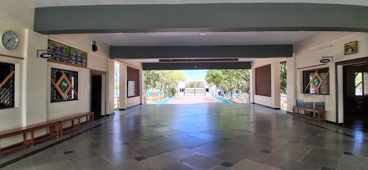
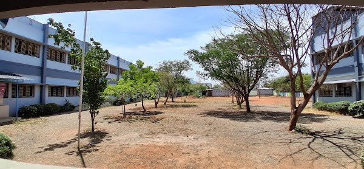
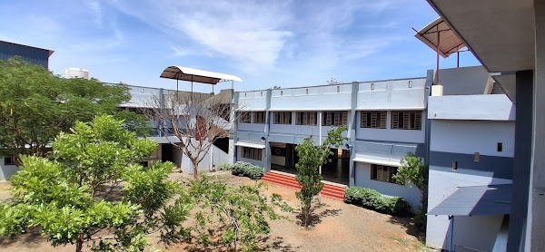
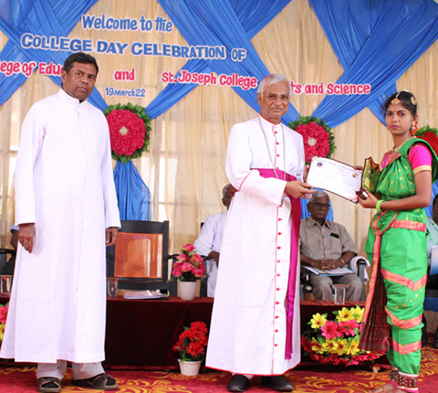
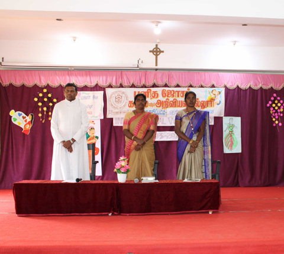
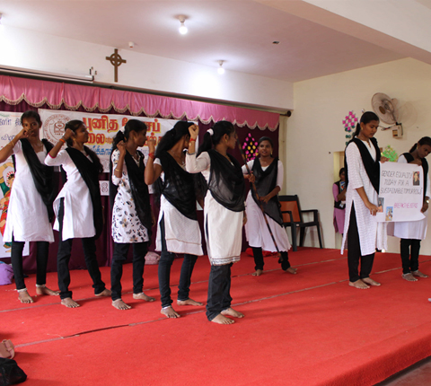
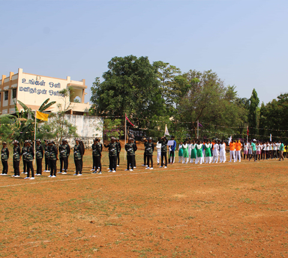
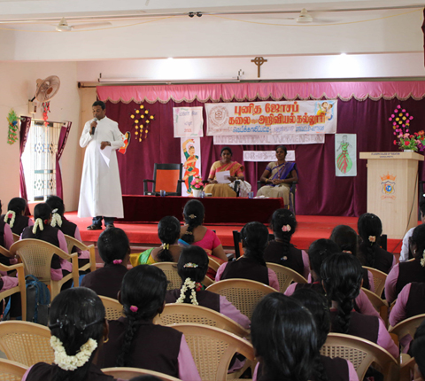
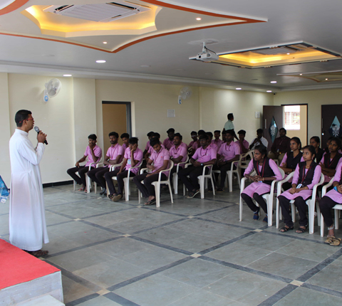
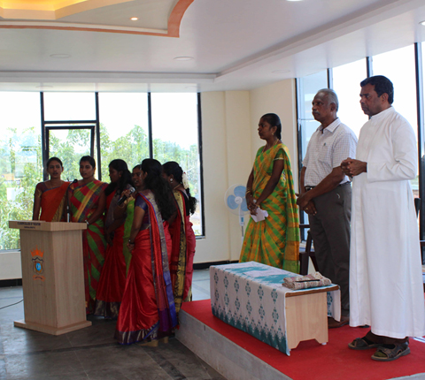
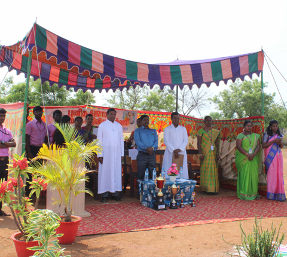